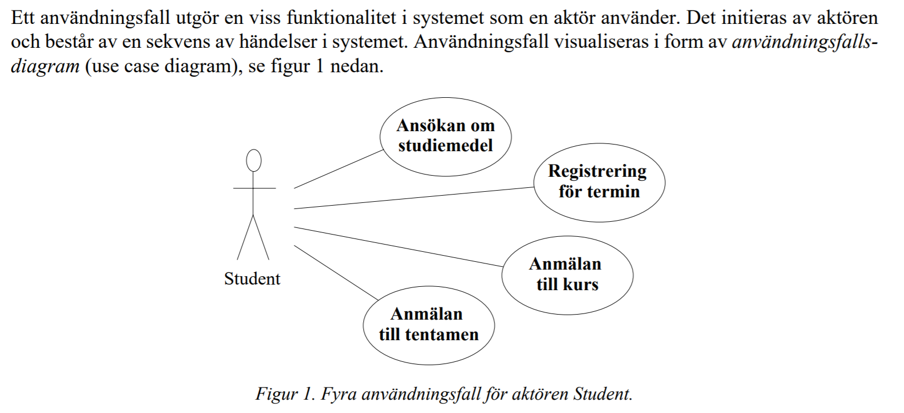
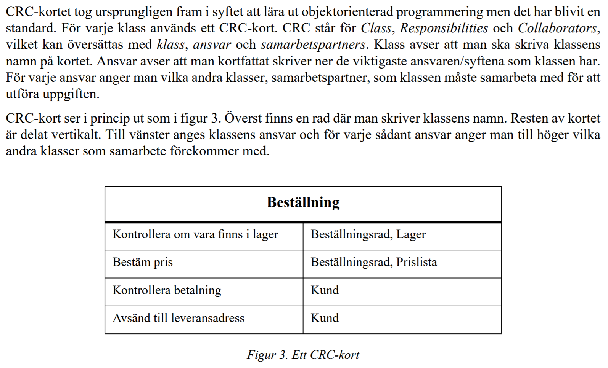
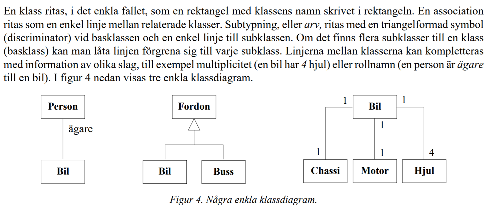
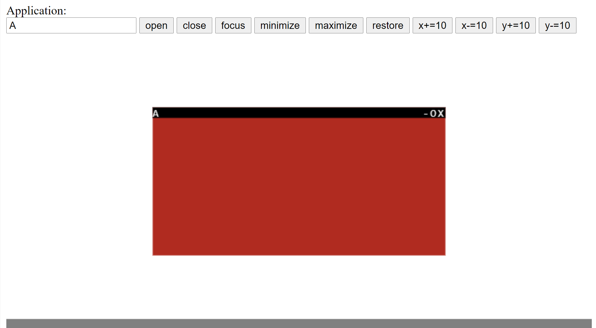
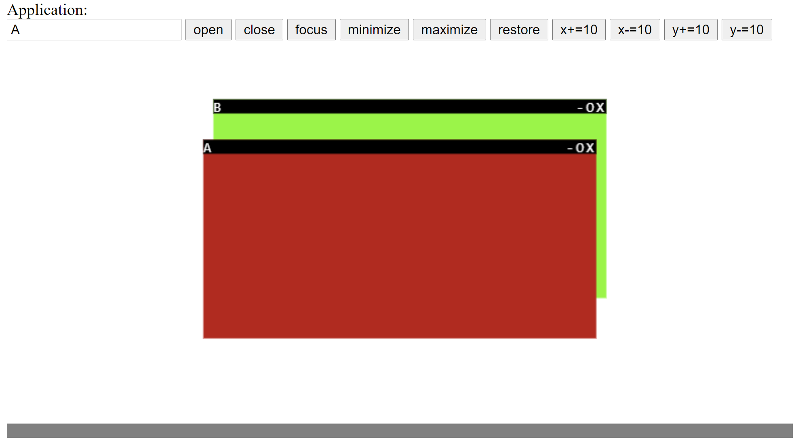
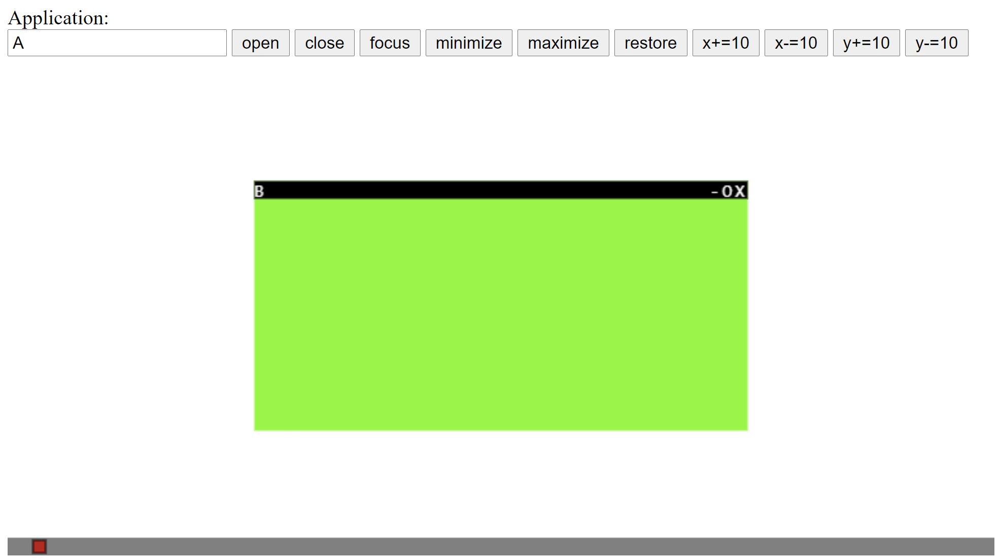
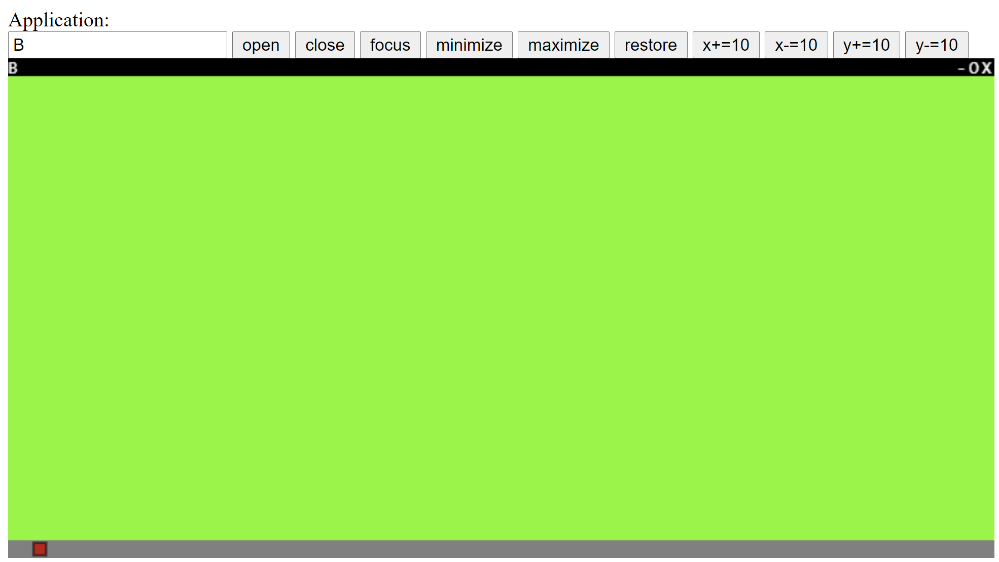
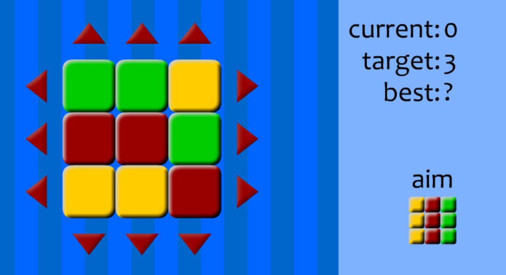

Allmänt
Material
Ladda ner version 2.0.2 av BalderJS. (Med buggfix 2021-10-27)
Skolverket
BalderJS API
Att-kunna-lista
- Använda data med datatyperna
string,number,booleanochobject. - Skapa och anropa funktioner (även asynkrona).
- Rita i canvasen (med till exempel
circle,rectangleochtext). - Skapa animeringar (med
setUpdate). - Läsa och skriva data (med
inputochoutput). - Kontrollstrukturer, inklusive undantagshantering (
try-catch). - Skapa och använda arrayer med en och två dimensioner.
- Skapa nya element (med
add) och koppla händelsehanterare till dessa. - Skapa klasser med:
- egenskaper
- konstruktorer
- metoder
- getters och setters
- Skapa och använda objekt.
- Skapa klasser som ärver från andra klasser (med
extends). - Skapa inkapsling med åtkomstmodifierare (
private,protectedochpublic). - Skriva till, och läsa från,
localStorage. - Skicka meddelanden mellan två klienter.
Att-kunna-lista Teoriprov
OOP
Begrepp att känna igen, beskriva och helst förstå:
- Klasser och objekt (
class,new) - Egenskaper
- Metoder
- Konstruktorer (
constructor) - getters och setters (
get,set) - Inkapsling (
private,protected,publicochreadonly) - Klassegenskaper och klassmetoder (med
static) - Arv (
extends) - Abstrakta klasser (med
abstract) - Polymorfism
- Gränssnitt (
interface,implements) Generiska klasser och metoder (<Type>)
OOA, OOD
Dessa begrepp, från häftet Objektorienterad programutveckling i ett nötskal, ska du kunna namnge då de förklaras:
- Användningsfallsdiagram (use case diagrams)
 - CRC-kort
 - Klassdiagram

Tips o trix med VS Code
Vad kallas tecknen?
Uppgifter
Objektorienterad programutveckling
Läs igenom minst en gång.
Windows (provuppgift)
Skapa en mapp windows.
Skapa i den en klass Window med detta innehåll:
Egenskaper:
app, en text som är fönstrets (applikationens) namn.state, en text som kan anta värdena "minimized" , "maximized" och "normal".x, ett tal som anger x-koordinaten för fönstrets övre vänstra hörn.y, ett tal som anger y-koordinaten för fönstrets övre vänstra hörn.width, ett tal som anger fönstrets bredd.height, ett tal som anger fönstrets höjd.color, en text som anger fönstrets färg.
Konstruktor:
Tar emot en parameter som anger fönstrets namn. Sätter storlek och position så att fönstret hamnar (typ) i mitten av canvasen. Slumpar fram fönstrets färg.Metoder:
draw()- ritar upp fönstret i canvasenmaximize()- maximerar fönstret genom att ändrastate-egenskapen.minimize()- minimerar fönstret genom att ändrastate-egenskapen.restore()- återställer fönstret genom att ändrastate-egenskapen.
Knapparnas funktionalitet:
- open ska öppna ett angivet fönster. Det kan se ut så här:
Längst upp i fönstret ska en list visas med namnet till vänster och tre symboler ("-", "O", "X") till höger.
- close ska stänga (ta bort) ett angivet fönster.
- focus ska ge fokus åt ett angivet fönster. Detta visas genom att fönstret ska ritas
ovanpå andra överlappande fönster:

- minimize ska minimera ett angivet fönster. Ett minimerat fönster visas som en liten
kvadrat i canvasens bottenlist:

- maximize ska maximera ett angivet fönster. Ett maximerat fönster visas på hela
canvasen, förutom bottenlisten:

- restore ska återställa ett angivet fönster till den storlek och position den hade före det min-/maximerades.
- x+=10 ska flytta ett angivet fönster 10 pixlar till höger.
- x-=10 ska flytta ett angivet fönster 10 pixlar till vänster.
- y+=10 ska flytta ett angivet fönster 10 pixlar nedåt.
- y-=10 ska flytta ett angivet fönster 10 pixlar uppåt.
Slutligen så vore det snyggt om alla fönsters tillstånd sparades i localStorage så
att man alltid kan börja om där man slutade förra gången.
Tips:
- Efter det att textrutan och knapparna skapats så kan funktion
resetCanvas()anropas. Den anpassar canvasen till det utrymme som finns över på skärmen. - Skapa en array av fönster (
Window-objekt), så här:
let ws: Window[] = [] - Då open-knappen klickas så lägg till ett nytt fönster i arrayen.
- Skapa en
draw-funktion som loopar igenom arrayen och för varje fönster anropar dessdraw-metod. Om inte fönstret är minimerat för då ska en liten ruta, med fönstrets färg, visas i bottenlisten istället. - Då close-knappen klickas så ta först reda på vilken plats fönstret har i arrayen och ta sedan bort det.
- Då focus-knappen klickas så flytta det fönstret sist i arrayen. På så vis ritas det upp sist och alltså överst.
Lämna in mappen i din codescan-mapp på skelamp.
* Galen extrauppgift:
Gör så att fönsterhanteringen fungerar som på "riktigt". Tänk om man kunde:
- Minimera, maximera, återställa och stänga genom att klicka på symbolerna i fönstrens övre högra hörn!
- Flytta fokus till ett fönster genom att klicka i det!
- Ändra storlek på ett fönster genom att "dra" i kanterna!
- Flytta ett fönster genom att "dra" det!
Tärning (Gammal provuppgift)
Klassen Tärning
Skriv en klass Tärning med:
- En egenskap prickar som kan innehålla ett tal.
- En metod kasta som vid anrop "kastar" tärningen; mer precist sätter egenskapen prickar slumpmässigt till 1, 2, 3, 4, 5 eller 6 och returnerar värdet.
- En konstruktor som anropar kasta-metoden en första gång för att ge tärningen ett starttillstånd, det vill säga gör så att egenskapen prickar har fått ett värde.
Testa med denna kod:
let t = new Tärning() output(t.prickar) output(t.kasta()) output(t.prickar)
Kommentar: Den första utskriften ska skriva 1, 2, 3, 4, 5, eller 6 (med lika stor sannolikhet vardera). Den andra utskriften ska skriva tärningens prickar efter det att den kastats en gång till. Den tredje utskriften ska vara identisk med den andra då prickarna bara avläses utan att tärningen kastas på nytt.
Exempel på godkänd utskrift (andra och tredje raden lika):
5 3 3
Exempel på felaktig utskrift (andra och tredje raden olika):
5 3 6
För betygen C-B-A ska dessutom detta finnas med/fungera:
- Konstruktorn ska kunna ta emot antalet sidor på tärningen. Om antalet inte skickas med
så ska
default-värdet vara 6. De enda värden som ska godkännas är 4, 6, 8, 12 och 20
(antalet sidor i de Platonska kropparna). Om andra
värden skickas in ska ett Error-objekt skapas, och kastas.
- Skriv testkod som gör det troligt att antalet sidor ändras på rätt sätt. Till exempel kan du
kasta 100 tärningar
och räkna hur många gånger du fick de olika utfallen. Visa helst resultatet grafiskt i ett
diagram.
- Skriv också testkod som visar att undantaget från konstruktorn kan fångas och
hanteras.
- Gör så att egenskapen prickar inte går att
skriva till från testkoden. Det är inte önskvärt att kod som denna fungerar:
t.prickar = 99
Det ska dock fortfarande gå att avläsa egenskapen. Tipset är att använde en "getter".
- Omdefinera toString-metoden så att
den
returnerar antalet prickar på tärningen. Testa med en utskrift som dessa:
output(t.prickar) output(t.toString()) output(t)
Raderna ska ge likadana utskrifter, i den sista anropas toString-metoden automatiskt.
- Gör en ny klass Bildtärning som:
- Ärver från klassen Tärning
- Har egenskaperna x, y, storlek.
- Har metoden visa, som vid anrop visar tärningen i canvas-rutan. Den ska då ritas upp i en rektangel med övre vänstra hörnet i (x, y) och med både bredd och höjd som storlek. (Hur detta ska göras får du bestämma själv. Man kan använda text-funktionen för att skriva ut antalet prickar, eller rita ut rätt antal prickar med anpassad storlek, eller visa tärningsbilder med image-funktionen, eller, ...)
- Omdefiniera kasta-metoden så
att
den också visar tärningen, enligt ovan.
- Skriv testkod till klassen övan.
- Gör en ny klass Yatzy
som:
- Har fem Bildtärning-objekt
- Har en kasta-metod som kastar om alla fem tärningar
- Har en kastaOm-metod där
man - på
ett sätt som du bestämmer själv - kan bestämma vilken eller vilka tärningar som ska
kastas om.
- Skriv testkod till klassen ovan.
Rubix (Gammal provuppgift)
Skapa ett program där man kan "vrida" en 2D-version av Rubiks kub. Spara projektet som rubix.
Du bestämmer själv över designen, det behöver inte se ut likadant som nedan.
- Det behöver alltså inte vara randig bakgrund eller röda pilar. Det viktiga är att man ska kunna se rutornas tillstånd och kunna förändra det.
- Du får, men behöver inte, använda ett Grid-objekt för att visa rutorna.
- Du får, men behöver inte, använda OOP (klasser och objekt).

Man ska - på något vis alltså - kunna "vrida" rader och kolumner åt olika håll. Om vi betraktar bara den översta raden med rutorna
■ ■ ■ (a, b, c)
...och vrider höger, så kommer raden att ändras till
■ ■ ■ (c, a, b)
Den gula rutan går "över kanten" och kommer fram till vänster. På samma sätt för övriga rader och kolumner
För betyget E:
- Startpositionen hårdkodas enligt bilden ovan.
- Första raden och kolumnen går att vrida.
- En räknare visar hur många vridningar som utförts. (Motsvarar current i skärmdumpen ovan. De övriga, target och best, behöver inte finnas med.)
- Måltillståndet (aim) visas eller beskrivs.
För betyget C:
- Alla rader och kolumner går att vrida.
- Koden är snygg, utan alltför mycket "klipp o klistra".
- Om målpositionen uppnås så meddelas detta.
- Startpositionen erhålls genom att utgå från målpositionen och vrida slumpmässigt 20 gånger.
- Ett lösningsförsök ska kunna pausas genom att spara tillståndet, för att sedan kunna återupptas vid ett senare tillfälle.
För betyget A:
- Det ska gå att välja storlek på kvadraten. Man ska kunna spela med 2-6 olika färger. De tre första färgerna är gul, röd och grön. De övriga färgerna bestämmer du själv. Måltillståndet är alltid en kolumn av färg ett, en kolumn av färg två och så vidare.